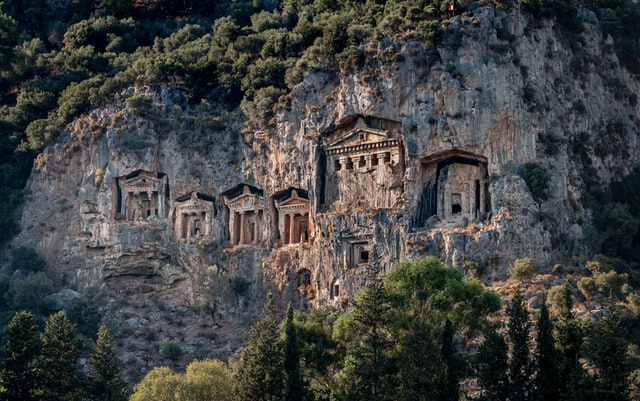
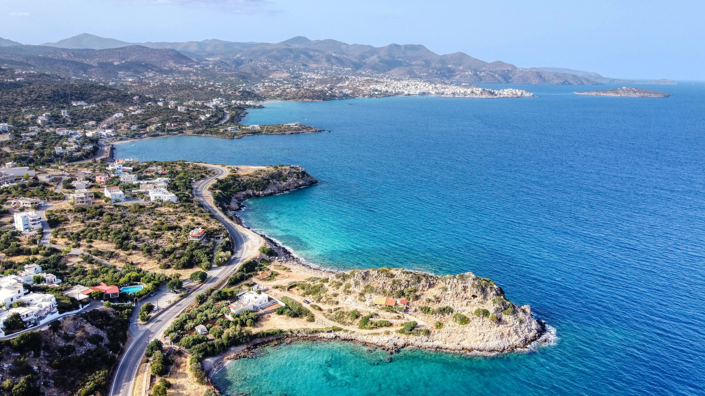

Dalyan is a small peaceful fishing village in the province Muğla. It's located in between Marmaris and Fethiye near the south-west coast of Turkey.
There are a lot of beautiful beaches to visit like the Iztuzu beach (also a breeding ground for the loggerhead sea turtle), Dalyanağzı beach, Aşı beach and Ekincik Beach.
The Lycian tombs that we're cut out of rock on the side of a cliff (also shown on the picture) is one of the most famous sights in Dalyan and definitely worth visiting.
Istanbul has it all: over 2500 years of history, culture, and traditions, amazing landmarks, vibrant nightlife, and breathtaking views.
This transcontinental metropolis is a fast-paced cultural melting pot you can’t afford to miss.
Rome and Istanbul are both over two-and-a-half millennia old, but for the majority of the time Istanbul was larger, more influential, and wealthier than Rome.
Istanbul has been the capital of four empires: the Roman Empire, the Byzantine Empire, the Latin Empire, the Byzantine Empire and the Ottoman Empire.
Istanbul’s history is very rich, and remains of each of these empires can still be witnessed.

The majestic and mythical Crete is Greek’s largest island, situated on the southern side of the Aegean Sea.
With over 600 miles of coastline to play with, there is no shortage of beautiful beaches and scenic views.
Home to ancient treasures, vibrant towns and sleepy villages, a holiday to Crete offers a taste of true Mediterranean life and a wealth of places to explore.
Its wild natural beauty is one of the many reasons people gravitate here.
One of the most notable landmarks are the famous snow topped White Mountains – or Lefka Ori – in western Crete.